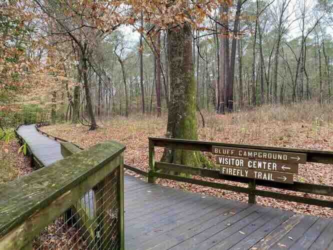
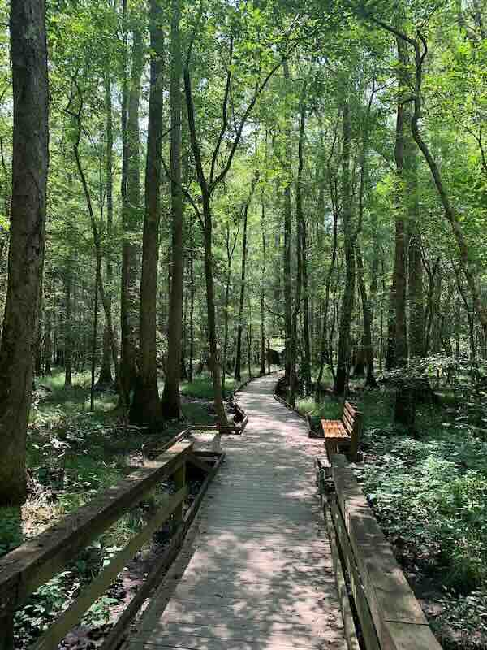

/visit/trail-guide
Content proof sheet — not a design mockup. Generated from trail-guide.json; edits belong in the bundle, not here.
Eleven miles of marked trail through the creek bottom and up onto the ridge. Open dawn to dusk, year round, no entry fee.

All three loops start from the same parking area and are blazed in different colors. Trail conditions change fast after rain — the creek crossing on the Blue Loop is genuinely impassable in spring.
If you have never been here before, start with the Boardwalk Loop.
content
cards
Half a mile, flat, fully accessible. Elevated boardwalk over the wetland, with benches at both ends.

Three and a half miles along the creek. One unbridged crossing — check the water level before you start.
Seven miles out and back, with about nine hundred feet of climbing. The overlook is worth it in October.
There is no cell service past the first quarter mile. Tell somebody your route, carry water, and turn around with enough daylight to get back.